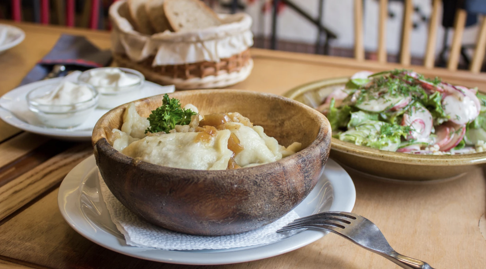
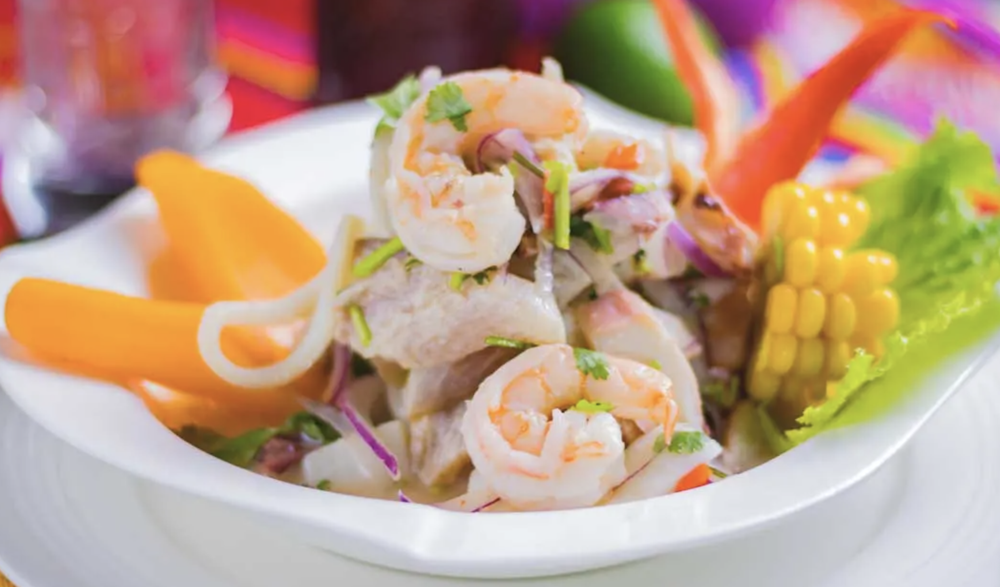
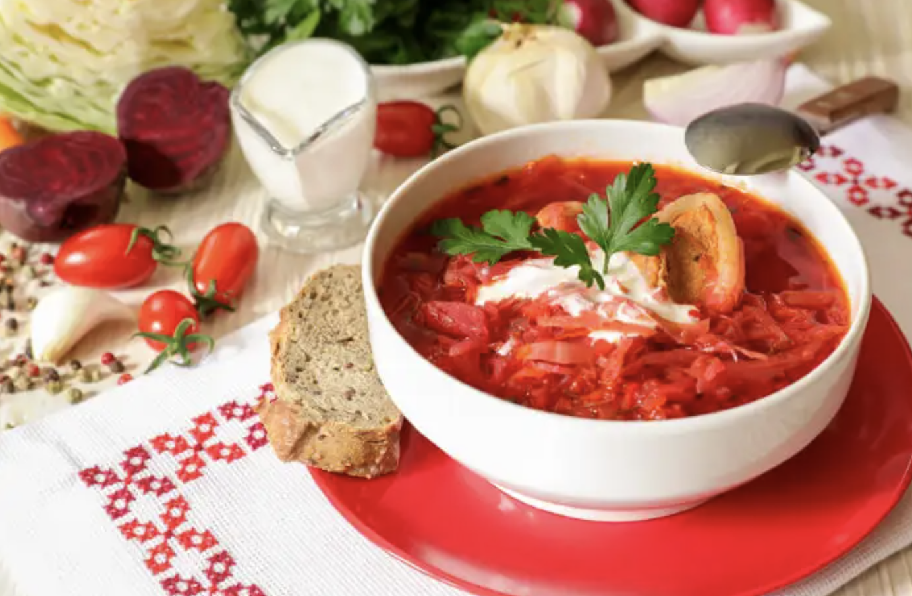
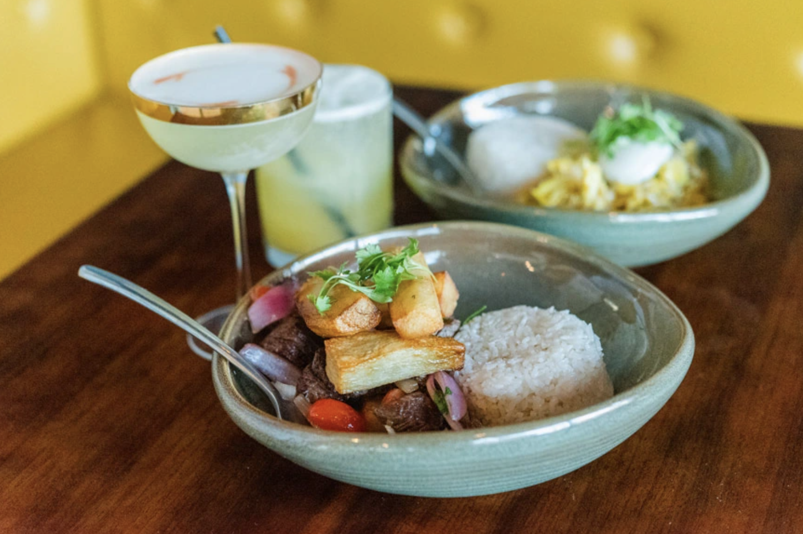
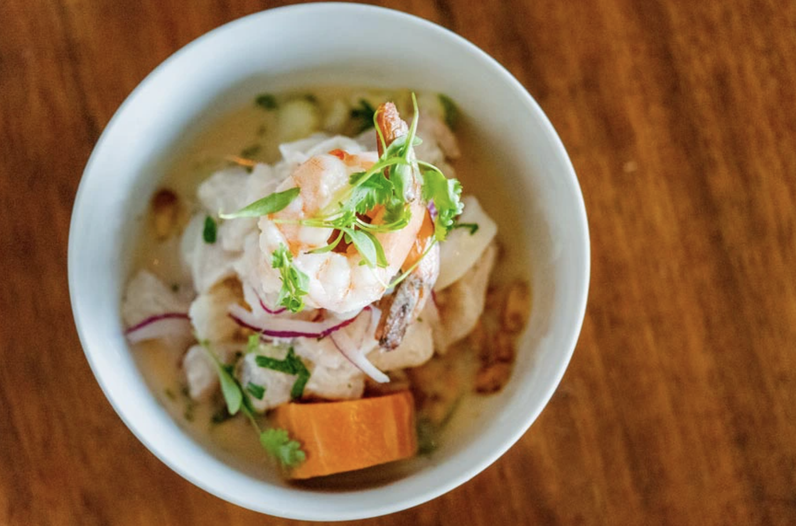

Culinary Chronicles: Showcasing the Best Food in the World
A website by: Valeriia
These are my favorite cuisines:
Ukrainian
Japanese
Peruvian
 
These are my favorite dishes:
Borsch
Lomo Saltado
Cevice
  
Checkout some of the recipes:
Borsch
Lomo Saltado
Cevice